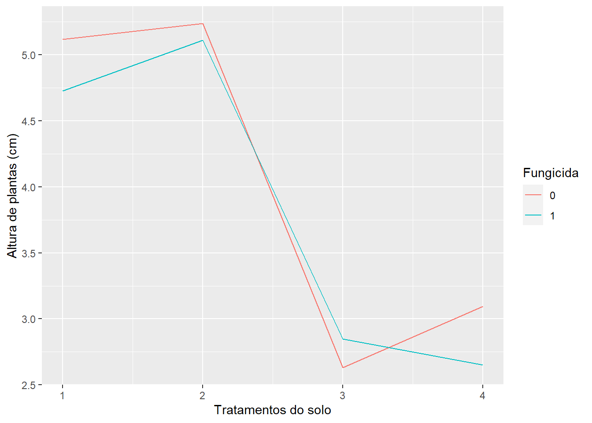
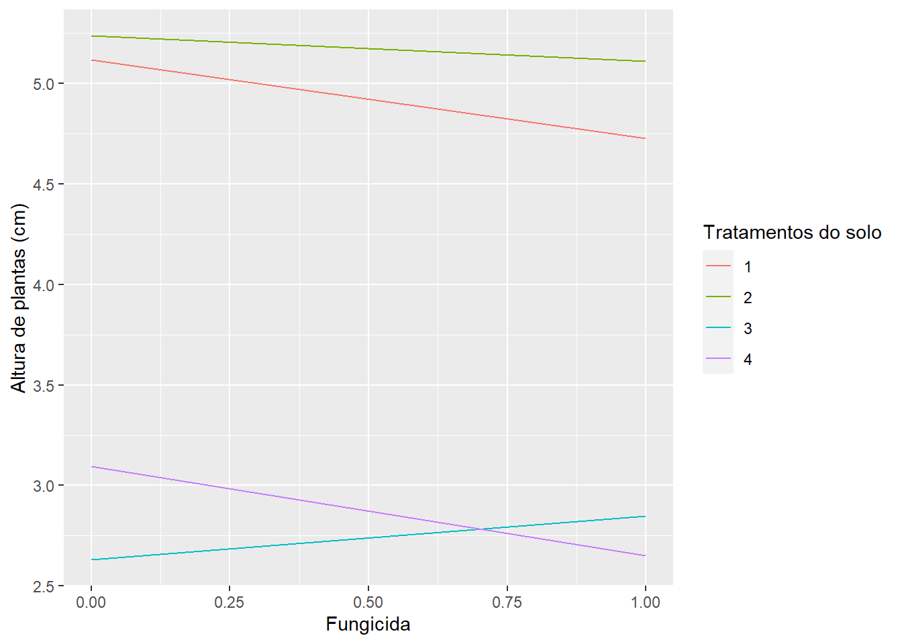

Capítulo 10 EXPERIMENTOS FATORIAIS
10.1 Introdução
Os experimentos simples, realizados de acordo com o delineamento interiamente casualizado ou em blocos casualizados, são utilizados para testar os efeitos de apenas um tipo de tratamento, ou fator, sendo os demais mantidos constantes.
Assim, por exemplo, num experimento de comparação de inseticidas em relação ao controle de uma determinada praga, devemos manter constante a dosagem, o método de aplicação, os tratos culturas, etc.
Porém, há casos em que necessitamos testar simultaneamente os efeitos de dois ou mais tipos de tratamentos (fatores) para obtermos resultados de interesse prático. Por exemplo, supondo que desejamos testar 3 inseticidas, 2 métodos de aplicação e 4 dosagens, teremos então um experimento fatorial de \(3\times2\times4\).
Os experimentos fatoriais são aqueles que nos permitem estudar, simultaneamente, os efeitos de dois ou mais tipos de fatores (tratamentos). Assim, eles devem ser instalados em um dos delineamentos já estudados (DIC, DBC, etc.).
Estes experimentos são utilizados em quase todos os campos de investigação e são bastante úteis em pesquisas iniciais, nas quais pouco se conhece a respeito de uma série de fatores.
O número de tratamentos nos experimentos fatoriais consiste de todas as combinações possíveis dos níveis dos fatores.
Por exemplo, se estamos interessados em testar o efeito de 3 inseticidas, cada um dos quais em 4 doses, teremos os 12 tratamentos seguintes.
\[ \begin{array}{} I_1 D_1 & I_2D_1 & I_3D_1 \\ I_1D_2 & I_2D_2 & I_3D_2 \\ I_1D_3 & I_2D_3 & I_3D_3 \\ I_1D_4 & I_2D_4 & I_3D_4 \end{array} \]
Neste caso, representamos o esquema fatorial como: \(\text{Fatorial }3 \times 4\) com 3 inseticidas e 4 dosagens.
As subdivisões de um fator são denominados NÍVEIS desse fator. Então, no exemplo anterior, o fator Inseticida ocorrem em 3 níveis, e o fator Dosagem ocorre em 4 nívies. Assim, no ensaio acima, podemos obter conclusões sobre a qual o melhor inseticida, qual a melhor dosagem e qual a melhor dosagem para cada inseticida.
Vamos então apresentar algumas definições necessárias ao bom entendimento dos ensaios fatoriais.
Supondo que temos 2 fatores A e B cada um dos quais em dois níveis (0 e 1, presença e auxência, repectivamente) e que os resultados obtidos foram os seguintes:
| \(B_0\) | \(B_1\) | Total | |
|---|---|---|---|
| \(A_0\) | 3 | 7 | 10 |
| \(A_1\) | 9 | 18 | 27 |
| Total | 12 | 25 | 37 |
10.2 Efeito simples de um fator
É uma medida da variação que ocorre com a variável resposta (característica em estudo) correspondente a variação nos níveis desse fator, em cada um dos níveis do outro fator.
Efeito de \(A\) dentro de \(B_0 = A_1B_0-A_0B_1 = 9 -3 = 6\)
Efeito de \(A\) dentro de \(B_1 = A_1B_1-A_0B_1 = 10-7 = 11\)
Efeito de \(B\) dentro de \(A_0 = A_0B_1-A_0B_0=7-3=4\)
Efeito de \(B\) dentro de \(A_1 = A_1B_0-A_1B_1 = 18-9=9\)
10.3 Efeito principal de um fator
É uma medida da variação que ocorre com a variável resposta correspondente às variações nos níveis em média de todos os níveis do outro fator.
Efeito Princial de \(A = \frac{\text{Ef. de A d. }B_0+\text{Ef. de A d. }B_1}{2}=\frac{6+11}{2}=8,5\)
ou ainda:
Efeito Princial de \(A = \frac{A_1B_0+A_1B_1}{2}-\frac{A_0B_0+A_0B_1}{2} = \frac{9+18}{2}-\frac{3+7}{2} = 13,5-5,0=8,5\)
Efeito Princial de \(B = \frac{\text{Ef. de B d. }A_0+\text{Ef. de B d. }A_1}{2}=\frac{4+9}{2}=6,5\)
ou ainda:
Efeito Princial de \(B = \frac{A_0B_1+A_1B_1 }{2}-\frac{A_0B_0+A _1B_0}{2} = \frac{7+18}{2}-\frac{3+9}{2} = 12,5-6,0=6,5\)
Portanto, o efeito principal de um fator é a média dos efeitos simples desse fator
10.4 Efeito da interação entre fatores
É uma medida da variação que ocorre com o efeito simples de um fator ao passar de um nível a outro do outro fator.
Efeito da Interação \(A \times B = \frac{A\;d.\;B_1-A\;d.\;B_0}{2} = \frac{(A_1B_1-A_0B_1)-(A_1B_0-A_0B_0)}{2}=\frac{11-6}{2}=2,5\)
Efeito da Interação \(B \times A = \frac{B\;d.\;A_1-B\;d.\;A_0}{2} = \frac{(A_1B_1-A_1B_0)-(A_0B_1-A_0B_0)}{2}=\frac{9-4}{2} = 2,5\)
Note que o efeito da Interação \(A \times B= B \times A\).
10.5 Vantagens dos experimentos fatoriais
Permite estudar os efeito simples, o efeito principal e o efeito da interação entre fatores.
Todas as pascelas experimentais entram no cálculo dos efeitos principais e interações, razão pela qual as médias dos níveis dos fatores são calculadas com um maior número de repetições.
10.6 Desvantagens dos experimentos fatoriais
A análise estatística é trabalhosa, e a interpretação dos resultados torna-se mais difícil à medida que aumentam o número de fatores e de níveis.
Como os tratamentos devem conter todas as combinações possíveis dos fatores em seus diversos níveis, o número de tratamentos aumenta rapidamente, e às vezes devido à exigência de homogeneidade dentro dos blocos, não podemos utilizar o delinemamento em blocos completos casualizados.
Sendo os tratamentos constituídos de todas as combinações possíveis dos fatores em seus diversos níveis, para que haja um balanceamento estatístico, às vezes algumas das combinações não tem interesse prático, mas devem ser mantidas para não quebrar o balanceamento.
10.7 Classificação dos Experementos Fatoriais
Fatoriais de série \(2^N\)
Nesta série são enquadrados os experimentos fatoriais em que são estudados os efeitos de N fatores cada um em 2 níveis.
BASE = Nº de Níveis
EXPOENTE = Nº de Fatores
Exemplos: \[ 2^2 \Rightarrow \text{2 Fatores em 2 Níveis} \\ 2^3 \Rightarrow \text{3 Fatores em 2 Níveis} \\ 2^4 \Rightarrow \text{4 Fatores em 2 Níveis} \\ \]
etc.
Fatoriais de série
Nesta série são enquadrados os experimentos fatoriais em que são estudados os efeitos de N fatores cada um em 3 níveis.
Exemplos: \[ 3^2 \Rightarrow \text{2 Fatores em 3 Níveis} \\ 3^3 \Rightarrow \text{3 Fatores em 3 Níveis} \\ 3^4 \Rightarrow \text{4 Fatores em 3 Níveis} \\ \] etc.
Fatoriais de série mista
Nesta série são enquadrado os fatoriais em que os fatores ocorrem em número diferente de níveis:
Exemplo: \[ 4\times 3\times 2 \Rightarrow \begin{cases} \text{1º Fator em 4 Níveis }\\ \text{2º Fator em 3 Níveis } \\ \text{3º Fator em 2 Níveis } \end{cases} \]
10.8 Casualização dos tratamentos
Para exemplificar a casualização dos tratamentos, vamos supor um experimento fatorial \(3 \times 2\), com 3 variedades de milho (\(V_1,V_2,V_3\)) e 2 níveis de adubação dom \(P_2O_5\) (\(P_1 e\; P_2\)). Se o experimento fosee instalado de acordo com o delineamento em blocos casualizados, com 4 repetições, teríamos:

O esquema da análise de variância preliminar deste ensaio será o seguinte:
| Causas de Variação | GL |
|---|---|
| Tratamentos | 5 |
| Blocos | 3 |
| Resíduos | 15 |
| Total | 23 |
Após a análise de variância preliminar, os graus de liberdade de tratamentos devem ser desdobrados de acordo com o esquema fatorial \(3 \times 2\), da seguinte maneira:
| Causas de Variação | GL |
|---|---|
| Variedades (V) | 2 |
| Adubação (P) | 1 |
| Interação (VxP) | 2 |
| (Tratamentos) | 5 |
| Blocos | 3 |
| Resíduos | 15 |
| Total | 23 |
10.9 Análise de variância de um experimento fatorial com 2 fatores com interação não significativa
Para a obtenção da análise de variância, vamos utlizar os dados adaptados do trabalho “Ensaios em condições de casa-de-vegetação para controlo químico do ‘damping-off’ em Eucalyptus saligna Sm.”, realizado por KRUGNER; CARVALHO (1971) e publicado em IPEF, n 2/3 p. 97-113. O ensaio foi realizado no delineamento inteiramente casualizado, com 3 repetições e foram estudados os efeitos sobre a altura média das mudas de Eucalytus saligna, do fatores:
Tratamento do solo (S), sendo:
\(S_1=\text{Vapam}\)
\(S_2=\text{Brometo de metila}\)
\(S_3=\text{PCNB}\)
\(S_4=\text{Testemunha}\)
Pulverização com fungicida em pós emergência, sendo:
\(F_0 = \text{Sem fungicida}\)
\(F_1 = \text{Com fungicida}\)
As alturas médias de mudas (cm) 28 dias após a semeadura foram:
| Tratamentos | Rep.1 | Rep.2 | Rep.3 | Total |
|---|---|---|---|---|
| \(S_1F_0\) | 4,65 | 5,18 | 5,52 | 15,35 |
| \(S_1F_1\) | 4,86 | 4,81 | 4,51 | 14,18 |
| \(S_2F_0\) | 4,55 | 5,16 | 6,00 | 15,71 |
| \(S_2F_1\) | 4,73 | 5,51 | 5,09 | 15,33 |
| \(S_3F_0\) | 2,68 | 2,65 | 2,56 | 7,89 |
| \(S_3F_1\) | 2,90 | 2,71 | 2,93 | 8,54 |
| \(S_4F_0\) | 3,48 | 2,75 | 3,06 | 9,29 |
| \(S_4F_1\) | 2,65 | 2,47 | 2,83 | 7,95 |
| Total | 94,24 |
Os dados podem ser encontrados online em solofungi.txt
10.10 Obtenção da análise de variância
O ensaio foi montado de acondo com o delineamento inteiramente casualizado, e, portanto, a análise de variância prelimiar, obtida de maneira usual, foi a seguinte:
\[ \begin{aligned} SQ_{Total} &= (4,65^2+5,18^2+ \dots +2,83^2) - \frac{94,24^2}{8 \cdot 3} \\ & = 403,2566 - 370,0491 \\ &= 33,2075 \\ \\ \\ SQ_{Trat} &= \frac{1}{3}(15,35^2+14,18^2+ \dots +7,95^2) - \frac{94,24^2}{8 \cdot 3} \\ & = 401,0061 - 370,0491 \\ &= 31,0170 \\ \\ \\ SQ_{Res} &= SQ_{Total} - SQ_{Trat} \\ & = 33,2075 - 31,0170 \\ &= 2,1905 \end{aligned} \]
Quadro da análise de variância preliminar:
| Causas de Variação | GL | SQ | QM | F |
|---|---|---|---|---|
| Tratamentos | 7 | 31,0170 | 4,4310 | 32,37** |
| Resíduos | 16 | 2,1905 | 0,1369 | |
| Total | 23 | 33,20175 |
Conclusão: O teste F foi significativo ao nível de \(1\%\) de probabilidade, logo, rejeitamos a hipótese da nulidade (\(H_0\)), e concluímos que os tratamentos possuem efeitos diferentes sobre a altura das mudas de Eucalyptus saligna, com um grau de confiança superior a \(99\%\) de probabilidade.
Devemos agora desdobrar a soma de quadrados e os graus de liberdade de tratamentos para estudar os efeitos principais e a interação entre os fatores.
Para facilitar os cálculos, utilizamos um quadro auxiliar como o seguinte:
| \((3)\) | \(S_1\) | \(S_1\) | \(S_1\) | \(S_1\) | Total |
|---|---|---|---|---|---|
| \(F_0\) | 15,35 | 15,71 | 7,89 | 9,29 | 48,24 |
| \(F_1\) | 14,18 | 15,33 | 8,54 | 7,95 | 46,00 |
| Total | 29,53 | 31,04 | 16,43 | 17,24 | 94,24 |
Então, as somas de quadrados são obtidas da seguinte maneira:
1. Soma de quadrados devido ao efeito de Tratamento do Solo: \[ \begin{aligned} SQ_{Ef.Trat.Solo} &= \frac{1}{r_s}(T_{S_1}^2+T_{S_2}^2+T_{S_3}^2+T_{S_4}^2) - C \\ &= \frac{1}{6}(29,53^2+31,04^2+16,43^2+17,24^2) - \frac{94,24^2}{24} \\ &= 30,3951 \end{aligned} \]
2. Soma de quadrados devido ao efeito de Fungicidas:
\[ \begin{aligned} SQ_{Ef.Fung.} &= \frac{1}{r_F}(T_{F_0}^2+T_{F_1}^2) - C \\ &= \frac{1}{12}(48,24^2+46,00^2) - \frac{94,24^2}{24} \\ &= 0,2091 \end{aligned} \]
3. Soma de quadrados devido ao efeito da Interação Tratamento do Solo x Fungicida:
\[ \begin{aligned} SQ_{Interação\;S\times F} &= SQ_{S,F}-SQ_{Ef.Trat.Solo}-SQ_{Ef.Fungicida} \\ \\ & \text{assim, calculamos } SQ_{S,F}: \\ SQ_{S,F} &= \frac{1}{r_{SF}}(T_{S_1F_0}^2+T_{S_1F_1}^2+\cdots +T_{S_4F_1}^2) - C \\ &= \frac{1}{3}(15,35^2+14,18^2+\cdots + 7,95^2) - \frac{94,24^2}{24} \\ &= 31,0170 \end{aligned} \]
Portanto,
\[ \begin{aligned} SQ_{Interação\;S\times F} &= SQ_{S,F}-SQ_{S}-SQ_{F} \\ SQ_{Interação\;S\times F} &= 31,0170-30,3951-0,2091 \\ &= 0,4128 \end{aligned} \]
Portanto, temos o seguinte quadro de análise de variância
| Causas de Variação | GL | SQ | QM | F |
|---|---|---|---|---|
| Tratamento de solo (S) | 3 | 30,3951 | 10,1317 | 74,00 |
| Fungicida (F) | 1 | 0,2091 | 0,2091 | 1,53 |
| Interação (SxF) | 3 | 0,4128 | 0,1376 | 1,01 |
| (Tratamentos) | 7 | 31,0170 | ||
| Resíduos | 16 | 2,1905 | 0,1369 | |
| Total | 23 | 33,2075 |
Valores de F da tabela para Trat. do solo (\(3 \times 16 GL\)): \(\begin{cases}5\%=3,24 \\ 1\%=5,29 \end{cases}\)
Valores de F da tabela para Fungicida (\(1 \times 16 GL\)): \(\begin{cases}5\%=4,49 \\ 1\%=8,53 \end{cases}\)
Valores de F da tabela para Interação \(S\times F\) (\(3 \times 16 GL\)): \(\begin{cases}5\%=3,24 \\ 1\%=5,29 \end{cases}\)
Conclusões
Para efeito de Tratamento do solo: O teste foi significativo ao nível de \(1\%\) de probabilidae, indicando que devemos rejeitar \(H_0\) e concluir que os tratamentos do solo possuem efeitos diferentes sobre a altura de mudas de eucalipto.
Para efeito de Fungicida: O teste não foi significativo ao nível de \(5\%\) de probabilidae, indicando que não devemos rejeitar \(H_0\) e concluir que a aplicação ou não de fungicida em pós-emergência não possui efeito sobre a altura de mudas de eucalipto.
Para efeito da Interação (S \(\times\) F): O teste não foi significativo ao nível de \(5\%\) de probabilidae, indicando que não devemos rejeitar \(H_0\) e concluir que os tratamentos de solo agem de maneira independe do fungicida sobres a altura das mudas de eucalipto.
Portanto, como a Interação S\(\times\)F foi não significativa, podemos estudar os efeitos principais dos fatores independentemente um do outro.
Para complementar a análise de variância, e obter conclusões mais específicas sobre o efeito de cada um dos fatores, podemos utilizar os testes de comparação de médias.
10.11 Cálculo das média de Tratamento do Solo e erros padrões das médias
\[ \hat{m_{S_1}} = \frac{T_{S_1}}{r_{S_1}}=\frac{29,53}{6}=4,92\;cm \\ \hat{m_{S_2}} = \frac{T_{S_2}}{r_{S_2}}=\frac{31,04}{6}=5,17\;cm \\ \hat{m_{S_3}} = \frac{T_{S_3}}{r_{S_3}}=\frac{16,43}{6}=2,74\;cm \\ \hat{m_{S_4}} = \frac{T_{S_4}}{r_{S_4}}=\frac{17,24}{6}=2,87\;cm \]
O erro padrão destas médias será:
\[ s(\hat{m})=\sqrt{\frac{QM_{Res}}{r_S}}=\sqrt{\frac{0,1369}{6}} = 0,15\;cm \]
Teste de Tukey para comparar as médias de tratamento do solo
\[ DMS=q_{(4\times16)}\cdot s(\hat{m})=4,05 \cdot 0,15 = 0,61\; cm \]
| - | \(\hat{m_{S_1}}\) | \(\hat{m_{S_4}}\) | \(\hat{m_{S_3}}\) |
|---|---|---|---|
| \(\hat{m_{S_2}}\) | \(0,25\) | \(2,30^*\) | \(2,43^*\) |
| \(\hat{m_{S_1}}\) | - | \(2,05^*\) | \(2,18^*\) |
| \(\hat{m_{S_4}}\) | - | - | \(0,13\) |
ou ainda:
\[ \hat{m_{S_2}} = 5,17\;cm -a\\ \hat{m_{S_1}} = 4,92\;cm -a\\ \hat{m_{S_4}} = 2,87\;cm -b\\ \hat{m_{S_3}} = 2,74\;cm -b\\ \]
Conclusão: Médias seguidas pela mesma letra não diferem entre sim pelo teste de Tukey ao nível de \(5\%\) de probabilidade.
10.12 Cálculo das média de Fungicidas e erros padrões das médias
\[ \hat{m_{F_0}} = \frac{T_{F_0}}{r_{F_0}}=\frac{48,24}{12}=4,02\;cm \\ \hat{m_{F_1}} = \frac{T_{F_1}}{r_{F_1}}=\frac{46,00}{12}=3,83\;cm \]
O erro padrão destas médias será:
\[ s(\hat{m})=\sqrt{\frac{QM_{Res}}{r_F}}=\sqrt{\frac{0,1369}{12}} = 0,11\;cm \]
Teste de Tukey para comparar as médias de Fungicidas
Note que não houve diferença significativa entre os tratamentos com e sem fungicidas e, portanto, não há necessidada de se comparar essas médias. Porém, caso quiséssemos compara-lás pelo teste de Tukey, teríamos:
\[ DMS=q_{(2\times1 6)}\cdot s(\hat{m})=3.00 \cdot 0,11 = 0,32\; cm \\ \hat{Y}=\hat{m}_{F_0}-\hat{m}_{F_1}=4,02-3,83=0,19 \; cm \]
Portanto, como \(\hat{Y}< DMS \Rightarrow \hat{m}_{F_0}\) não difere de \(\hat{m}_{F_1}\)
10.13 Cálculo do coeficiente de variação do experimento
\[ CV=100\cdot \frac{\sqrt{QM_{res}}}{\hat{m}}=100\cdot \frac{0,3700}{3,9267}=9,42\% \]
Aplicação no R

Utilizando as funções básicas e o pacote agricolae
# Carregando o pacote para análise de variância
library(agricolae)
library(tidyverse)
# Definindo o caminho do banco de dados
caminho<-"https://raw.githubusercontent.com/arpanosso/ExpAgr_2020/master/dados/solofungi.txt"
# Entrada da dados
dados<-read.table(caminho,h=TRUE)
#Guardando os fatores (tratamentos de solo e fungicidas) e a variável resposta (y)
solos<-as.factor(dados$S)
fungicida<-as.factor(dados$F)
y<-dados$y
# Gráfico da interação
dados %>%
group_by(S,F) %>%
summarise(Y = mean(y)) %>%
ggplot(aes(x=S, y=Y,col=as.factor(F)))+
geom_line()+
labs(x="Tratamentos do solo",y="Altura de plantas (cm)",col="Fungicida")
dados %>%
group_by(S,F) %>%
summarise(Y = mean(y)) %>%
ggplot(aes(x=F, y=Y,col=as.factor(S)))+
geom_line()+
labs(x="Fungicida",y="Altura de plantas (cm)",col="Tratamentos do solo") Analise considerando o delineamento de tratamentos
## Analysis of Variance Table
##
## Response: y
## Df Sum Sq Mean Sq F value Pr(>F)
## solos 3 30.3951 10.1317 74.0035 1.35e-09 ***
## fungicida 1 0.2091 0.2091 1.5271 0.2344
## solos:fungicida 3 0.4128 0.1376 1.0051 0.4161
## Residuals 16 2.1905 0.1369
## ---
## Signif. codes: 0 '***' 0.001 '**' 0.01 '*' 0.05 '.' 0.1 ' ' 1Medias dos efeitos principais e da interação
## Tables of means
## Grand mean
##
## 3.926667
##
## solos
## solos
## 1 2 3 4
## 4.922 5.173 2.738 2.873
##
## fungicida
## fungicida
## 0 1
## 4.020 3.833
##
## solos:fungicida
## fungicida
## solos 0 1
## 1 5.117 4.727
## 2 5.237 5.110
## 3 2.630 2.847
## 4 3.097 2.650SE A INTERAÇÃO FOR NÃO SIGNIFICATIVA
Comparações múltiplas (Tukey) para os efeitos principais
##
## Study: mod ~ "solos"
##
## HSD Test for y
##
## Mean Square Error: 0.1369083
##
## solos, means
##
## y std r Min Max
## 1 4.921667 0.3699414 6 4.51 5.52
## 2 5.173333 0.5270547 6 4.55 6.00
## 3 2.738333 0.1460708 6 2.56 2.93
## 4 2.873333 0.3556778 6 2.47 3.48
##
## Alpha: 0.05 ; DF Error: 16
## Critical Value of Studentized Range: 4.046093
##
## Minimun Significant Difference: 0.6111885
##
## Treatments with the same letter are not significantly different.
##
## y groups
## 2 5.173333 a
## 1 4.921667 a
## 4 2.873333 b
## 3 2.738333 b##
## Study: mod ~ "fungicida"
##
## HSD Test for y
##
## Mean Square Error: 0.1369083
##
## fungicida, means
##
## y std r Min Max
## 0 4.020000 1.283589 12 2.56 6.00
## 1 3.833333 1.162867 12 2.47 5.51
##
## Alpha: 0.05 ; DF Error: 16
## Critical Value of Studentized Range: 2.997999
##
## Minimun Significant Difference: 0.3202254
##
## Treatments with the same letter are not significantly different.
##
## y groups
## 0 4.020000 a
## 1 3.833333 aSE A INTERAÇÃO FOR SIGNIFICATIVA
Desdobramento de Tratamento de Solos dentro Fungicida
# Redefinindo o modelo para o estudo das interações
modab <- aov(y~fungicida/solos) # Colocar os Controles locais, blocos, se for o caso
# Observe a posição dos efeitos que tem a interação fungicida:solos
effects(modab)## (Intercept) fungicida1 fungicida0:solos2 fungicida1:solos2
## -19.23665945 0.45723809 -2.43333333 -2.55333333
## fungicida0:solos3 fungicida1:solos3 fungicida0:solos4 fungicida1:solos4
## 2.08832203 1.19029641 2.47398464 2.54338685
##
## 0.22214988 0.08861007 0.21297776 0.54969732
##
## 0.02094651 -0.15636171 -0.43154093 -0.17709510
##
## 0.56214988 -0.21138993 1.05297776 0.12969732
##
## -0.06905349 0.06363829 -0.12154093 0.18290490
## attr(,"assign")
## [1] 0 1 2 2 2 2 2 2
## attr(,"class")
## [1] "coef"## fungicida0:solos2 fungicida1:solos2 fungicida0:solos3 fungicida1:solos3
## -2.433333 -2.553333 2.088322 1.190296
## fungicida0:solos4 fungicida1:solos4
## 2.473985 2.543387summary(modab,split=list("fungicida:solos"=list(Fung0=c(1,3,4), # tem fungicida 0
Fung1=c(2,4,6)))) # tem fungicida 1## Df Sum Sq Mean Sq F value Pr(>F)
## fungicida 1 0.209 0.209 1.527 0.234
## fungicida:solos 6 30.808 5.135 37.504 1.50e-08 ***
## fungicida:solos: Fung0 3 11.699 3.900 28.484 1.18e-06 ***
## fungicida:solos: Fung1 3 14.405 4.802 35.072 2.89e-07 ***
## Residuals 16 2.191 0.137
## ---
## Signif. codes: 0 '***' 0.001 '**' 0.01 '*' 0.05 '.' 0.1 ' ' 1Desdobramento de Fungicida dentro Tratamento de Solo
# Redefinindo o modelo para o estudo das interações
modba <- aov(y~solos/fungicida) # Colocar os Controles locais, blocos, se for o caso
# Observe a posição dos efeitos que tem a interação solos:fungicida
effects(modba)## (Intercept) solos2 solos3 solos4
## -19.23665945 3.52610582 -2.31833333 -3.54781740
## solos1:fungicida1 solos2:fungicida1 solos3:fungicida1 solos4:fungicida1
## 0.47765050 -0.15513435 -0.26536139 0.54705271
##
## 0.27843631 0.23598418 0.17014073 0.45811440
##
## 0.04648794 -0.42110079 -0.34919980 -0.18139452
##
## 0.61843631 -0.06401582 1.01014073 0.03811440
##
## -0.04351206 -0.20110079 -0.03919980 0.17860548
## attr(,"assign")
## [1] 0 1 1 1 2 2 2 2
## attr(,"class")
## [1] "coef"## solos1:fungicida1 solos2:fungicida1 solos3:fungicida1 solos4:fungicida1
## 0.4776505 -0.1551344 -0.2653614 0.5470527summary(modba,split=list("solos:fungicida"=list(Tsolo1=1, # tem solo 1
Tsolo2=2, # tem solo 2
Tsolo3=3, # tem solo 3
Tsolo4=4 # tem solo 4
))) ## Df Sum Sq Mean Sq F value Pr(>F)
## solos 3 30.395 10.132 74.004 1.35e-09 ***
## solos:fungicida 4 0.622 0.155 1.136 0.375
## solos:fungicida: Tsolo1 1 0.228 0.228 1.666 0.215
## solos:fungicida: Tsolo2 1 0.024 0.024 0.176 0.681
## solos:fungicida: Tsolo3 1 0.070 0.070 0.514 0.484
## solos:fungicida: Tsolo4 1 0.299 0.299 2.186 0.159
## Residuals 16 2.191 0.137
## ---
## Signif. codes: 0 '***' 0.001 '**' 0.01 '*' 0.05 '.' 0.1 ' ' 1Utilizando ao pacrote ExpDes.pt, mais prático
# Carregando o pacote para análise de variância
library(ExpDes.pt)
# Definindo o caminho do banco de dados
caminho<-"https://raw.githubusercontent.com/arpanosso/ExpAgr_2020/master/dados/solofungi.txt"
# Entrada da dados
dados<-read.table(caminho,h=TRUE)
#Guardando os fatores (tratamentos de solo e fungicidas) e a variável resposta (y)
solos<-dados$S
fungicida<-dados$F
y<-dados$y
# Utilizando a função fat2.dic do pacote ExpDes.pt
fat2.dic(solos,fungicida,y,fac.names = c("Trat.Solo", "Fungicida"))## ------------------------------------------------------------------------
## Legenda:
## FATOR 1: Trat.Solo
## FATOR 2: Fungicida
## ------------------------------------------------------------------------
##
##
## Quadro da analise de variancia
## ------------------------------------------------------------------------
## GL SQ QM Fc Pr>Fc
## Trat.Solo 3 30.395 5 74.004 0.00000
## Fungicida 1 0.209 4 1.527 0.23439
## Trat.Solo*Fungicida 3 0.413 3 1.005 0.41607
## Residuo 16 2.191 2
## Total 23 33.208 1
## ------------------------------------------------------------------------
## CV = 9.42 %
##
## ------------------------------------------------------------------------
## Teste de normalidade dos residuos (Shapiro-Wilk)
## valor-p: 0.6260575
## De acordo com o teste de Shapiro-Wilk a 5% de significancia, os residuos podem ser considerados normais.
## ------------------------------------------------------------------------
##
## Interacao nao significativa: analisando os efeitos simples
## ------------------------------------------------------------------------
## Trat.Solo
## Teste de Tukey
## ------------------------------------------------------------------------
## Grupos Tratamentos Medias
## a 2 5.173333
## a 1 4.921667
## b 4 2.873333
## b 3 2.738333
## ------------------------------------------------------------------------
##
## Fungicida
## De acordo com o teste F, as medias desse fator sao estatisticamente iguais.
## ------------------------------------------------------------------------
## Niveis Medias
## 1 0 4.020000
## 2 1 3.833333
## ------------------------------------------------------------------------